5 ARMA Modeling
5.1 ARMA Modeling: d.yyy
5.1.1 Identification
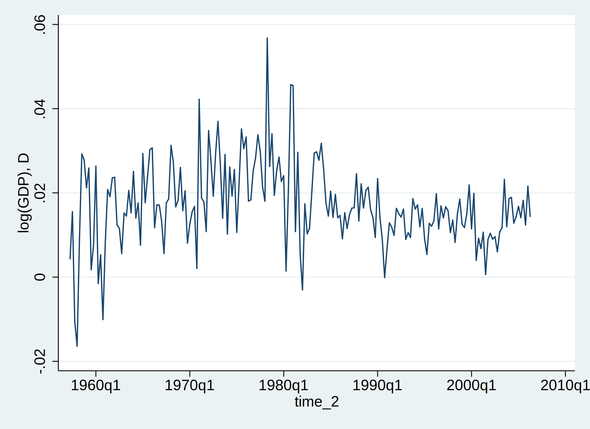
/* standard error: Bartlett formula for MA(q), see classnotes 2.3.2 */
ac d.yyy, lags(24) level (95)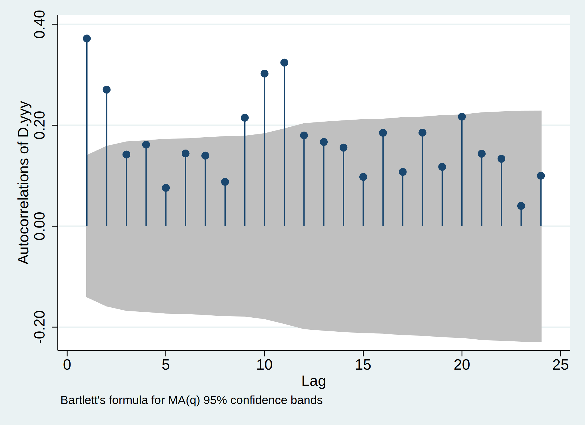
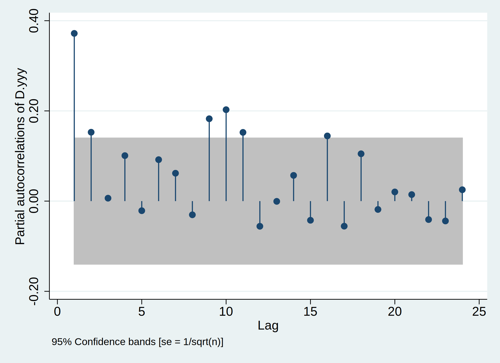
5.1.2 Estimation & Diagnostics (ARMA)
5.1.2.1 Estimation
/* by default, Stata estimate ARIMA using exact MLE */
arima yyy, arima(2,1,2) /* mixed ARMA */
/* arima d.yyy, arima(2,0,2) */
/* arima d.yyy, ar(1 2) ma(1 2) */
/* arima d.yyy, ar(1/2) ma(1/2) */(setting optimization to BHHH)
Iteration 0: log likelihood = 650.59224
Iteration 1: log likelihood = 652.77714
Iteration 2: log likelihood = 653.83873
Iteration 3: log likelihood = 654.75285
Iteration 4: log likelihood = 654.97262
(switching optimization to BFGS)
Iteration 5: log likelihood = 655.00383
Iteration 6: log likelihood = 655.2957
Iteration 7: log likelihood = 655.32887
Iteration 8: log likelihood = 655.34385
Iteration 9: log likelihood = 655.35017
Iteration 10: log likelihood = 655.35129
Iteration 11: log likelihood = 655.35132
Iteration 12: log likelihood = 655.35132
ARIMA regression
Sample: 1957q2 - 2006q2 Number of obs = 197
Wald chi2(4) = 10747.63
Log likelihood = 655.3513 Prob > chi2 = 0.0000
------------------------------------------------------------------------------
| OPG
D.yyy | Coef. Std. Err. z P>|z| [95% Conf. Interval]
-------------+----------------------------------------------------------------
yyy |
_cons | .0159815 .0023536 6.79 0.000 .0113686 .0205944
-------------+----------------------------------------------------------------
ARMA |
ar |
L1. | 1.30105 .3773679 3.45 0.001 .5614223 2.040677
L2. | -.3173635 .3583816 -0.89 0.376 -1.019778 .3850515
|
ma |
L1. | -1.02603 .3862259 -2.66 0.008 -1.783019 -.2690409
L2. | .1051773 .3123677 0.34 0.736 -.5070521 .7174066
-------------+----------------------------------------------------------------
/sigma | .0086786 .0003294 26.35 0.000 .008033 .0093242
------------------------------------------------------------------------------
Note: The test of the variance against zero is one sided, and the two-sided
confidence interval is truncated at zero.(setting optimization to BHHH)
Iteration 0: log likelihood = 649.89655
Iteration 1: log likelihood = 651.7709
Iteration 2: log likelihood = 651.96361
Iteration 3: log likelihood = 651.98377
Iteration 4: log likelihood = 651.98584
(switching optimization to BFGS)
Iteration 5: log likelihood = 651.98615
Iteration 6: log likelihood = 651.98624
Iteration 7: log likelihood = 651.98625
ARIMA regression
Sample: 1957q2 - 2006q2 Number of obs = 197
Wald chi2(2) = 130.83
Log likelihood = 651.9862 Prob > chi2 = 0.0000
------------------------------------------------------------------------------
| OPG
D.yyy | Coef. Std. Err. z P>|z| [95% Conf. Interval]
-------------+----------------------------------------------------------------
yyy |
_cons | .0169337 .0013604 12.45 0.000 .0142673 .0196001
-------------+----------------------------------------------------------------
ARMA |
ar |
L1. | .7426586 .0944539 7.86 0.000 .5575322 .9277849
|
ma |
L1. | -.4471189 .1244703 -3.59 0.000 -.6910763 -.2031615
-------------+----------------------------------------------------------------
/sigma | .0088342 .0003134 28.19 0.000 .0082199 .0094484
------------------------------------------------------------------------------
Note: The test of the variance against zero is one sided, and the two-sided
confidence interval is truncated at zero.(setting optimization to BHHH)
Iteration 0: log likelihood = 650.6186
Iteration 1: log likelihood = 651.68917
Iteration 2: log likelihood = 651.99049
Iteration 3: log likelihood = 652.90482
Iteration 4: log likelihood = 654.60604
(switching optimization to BFGS)
Iteration 5: log likelihood = 654.70836
Iteration 6: log likelihood = 654.7165
Iteration 7: log likelihood = 654.71683
Iteration 8: log likelihood = 654.71686
ARIMA regression
Sample: 1957q2 - 2006q2 Number of obs = 197
Wald chi2(3) = 5210.50
Log likelihood = 654.7169 Prob > chi2 = 0.0000
------------------------------------------------------------------------------
| OPG
D.yyy | Coef. Std. Err. z P>|z| [95% Conf. Interval]
-------------+----------------------------------------------------------------
yyy |
_cons | .0159279 .0023577 6.76 0.000 .0113068 .0205489
-------------+----------------------------------------------------------------
ARMA |
ar |
L1. | .9752008 .0236422 41.25 0.000 .9288629 1.021539
|
ma |
L1. | -.723271 .069351 -10.43 0.000 -.8591964 -.5873456
L2. | -.1543296 .0636119 -2.43 0.015 -.2790065 -.0296526
-------------+----------------------------------------------------------------
/sigma | .0087052 .0003273 26.59 0.000 .0080636 .0093468
------------------------------------------------------------------------------
Note: The test of the variance against zero is one sided, and the two-sided
confidence interval is truncated at zero.(setting optimization to BHHH)
Iteration 0: log likelihood = 650.28993
Iteration 1: log likelihood = 651.49754
Iteration 2: log likelihood = 651.68637
Iteration 3: log likelihood = 651.72782
Iteration 4: log likelihood = 651.73733
(switching optimization to BFGS)
Iteration 5: log likelihood = 651.74101
Iteration 6: log likelihood = 651.9374
Iteration 7: log likelihood = 651.9374 (backed up)
Iteration 8: log likelihood = 652.86225
Iteration 9: log likelihood = 652.86225 (backed up)
Iteration 10: log likelihood = 653.04407
Iteration 11: log likelihood = 653.35297
Iteration 12: log likelihood = 653.50905
Iteration 13: log likelihood = 653.95694
Iteration 14: log likelihood = 654.49788
(switching optimization to BHHH)
Iteration 15: log likelihood = 654.55222
Iteration 16: log likelihood = 655.04442
Iteration 17: log likelihood = 655.14238
Iteration 18: log likelihood = 655.1912
Iteration 19: log likelihood = 655.21255
(switching optimization to BFGS)
Iteration 20: log likelihood = 655.21579
Iteration 21: log likelihood = 655.24536
Iteration 22: log likelihood = 655.24791
Iteration 23: log likelihood = 655.24805
Iteration 24: log likelihood = 655.24806
ARIMA regression
Sample: 1957q2 - 2006q2 Number of obs = 197
Wald chi2(3) = 8084.35
Log likelihood = 655.2481 Prob > chi2 = 0.0000
------------------------------------------------------------------------------
| OPG
D.yyy | Coef. Std. Err. z P>|z| [95% Conf. Interval]
-------------+----------------------------------------------------------------
yyy |
_cons | .0159552 .0023243 6.86 0.000 .0113996 .0205108
-------------+----------------------------------------------------------------
ARMA |
ar |
L1. | 1.184938 .0880645 13.46 0.000 1.012335 1.357541
L2. | -.2040168 .0744351 -2.74 0.006 -.3499069 -.0581268
|
ma |
L1. | -.9065238 .0689221 -13.15 0.000 -1.041609 -.771439
-------------+----------------------------------------------------------------
/sigma | .0086828 .0003235 26.84 0.000 .0080488 .0093168
------------------------------------------------------------------------------
Note: The test of the variance against zero is one sided, and the two-sided
confidence interval is truncated at zero.5.1.2.2 Diagnostics
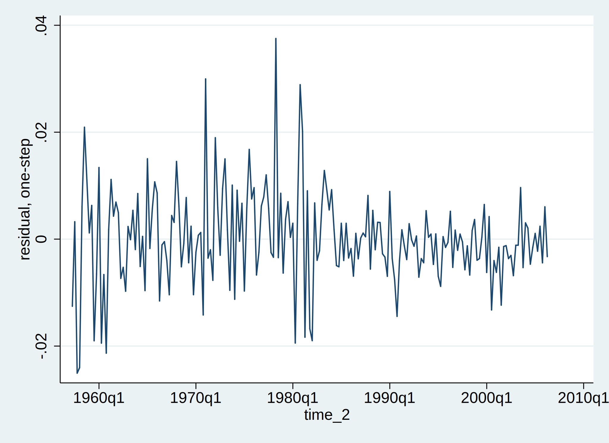
-1 0 1 -1 0 1
LAG AC PAC Q Prob>Q [Autocorrelation] [Partial Autocor]
-------------------------------------------------------------------------------
1 0.0101 0.0101 .02046 0.8863 | |
2 0.0086 0.0085 .03543 0.9824 | |
3 -0.0860 -0.0864 1.531 0.6751 | |
4 0.0262 0.0260 1.6706 0.7960 | |
5 -0.0828 -0.0830 3.069 0.6893 | |
6 0.0416 0.0343 3.4246 0.7540 | |
7 0.0270 0.0359 3.5748 0.8272 | |
8 -0.0889 -0.1044 5.2134 0.7345 | |
9 0.0750 0.0902 6.3851 0.7008 | |
10 0.1742 0.1781 12.75 0.2380 |- |-
11 0.2078 0.2109 21.853 0.0255 |- |-
12 0.0006 0.0274 21.853 0.0392 | |
13 0.0223 0.0214 21.959 0.0560 | |
14 0.0354 0.0805 22.228 0.0740 | |
15 -0.0480 -0.0535 22.724 0.0902 | |
16 0.1040 0.1383 25.067 0.0686 | |-
17 -0.0316 -0.0420 25.285 0.0885 | |
18 0.0984 0.1094 27.404 0.0717 | |
19 -0.0248 0.0148 27.54 0.0927 | |
20 0.1464 0.0488 32.287 0.0403 |- |
21 0.0369 0.0551 32.591 0.0510 | |
22 0.0540 -0.0050 33.243 0.0585 | |
23 -0.0815 -0.0544 34.739 0.0552 | |
24 0.0233 0.0066 34.863 0.0705 | | Portmanteau test for white noise
---------------------------------------
Portmanteau (Q) statistic = 34.8627
Prob > chi2(24) = 0.0705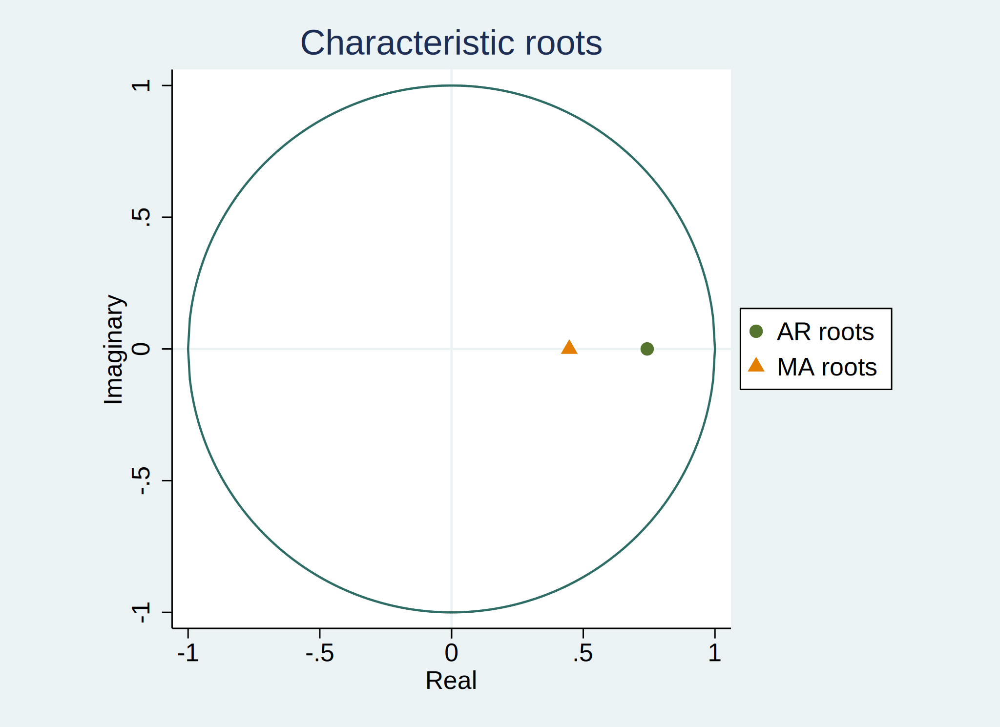
5.1.3 Estimation & Diagnostics (Pure AR)
5.1.3.1 Estimation
(setting optimization to BHHH)
Iteration 0: log likelihood = 649.42866
Iteration 1: log likelihood = 649.43048
Iteration 2: log likelihood = 649.4306
Iteration 3: log likelihood = 649.43061
ARIMA regression
Sample: 1957q2 - 2006q2 Number of obs = 197
Wald chi2(1) = 43.01
Log likelihood = 649.4306 Prob > chi2 = 0.0000
------------------------------------------------------------------------------
| OPG
D.yyy | Coef. Std. Err. z P>|z| [95% Conf. Interval]
-------------+----------------------------------------------------------------
yyy |
_cons | .0170224 .0010367 16.42 0.000 .0149905 .0190543
-------------+----------------------------------------------------------------
ARMA |
ar |
L1. | .3733012 .056924 6.56 0.000 .2617322 .4848701
-------------+----------------------------------------------------------------
/sigma | .008951 .0003111 28.77 0.000 .0083412 .0095608
------------------------------------------------------------------------------
Note: The test of the variance against zero is one sided, and the two-sided
confidence interval is truncated at zero.(setting optimization to BHHH)
Iteration 0: log likelihood = 651.74694
Iteration 1: log likelihood = 651.74843
Iteration 2: log likelihood = 651.74851
Iteration 3: log likelihood = 651.74853
Iteration 4: log likelihood = 651.74853
ARIMA regression
Sample: 1957q2 - 2006q2 Number of obs = 197
Wald chi2(2) = 53.25
Log likelihood = 651.7485 Prob > chi2 = 0.0000
------------------------------------------------------------------------------
| OPG
D.yyy | Coef. Std. Err. z P>|z| [95% Conf. Interval]
-------------+----------------------------------------------------------------
yyy |
_cons | .0170066 .001215 14.00 0.000 .0146252 .019388
-------------+----------------------------------------------------------------
ARMA |
ar |
L1. | .3157918 .0574913 5.49 0.000 .203111 .4284727
L2. | .152608 .0582 2.62 0.009 .0385381 .2666779
-------------+----------------------------------------------------------------
/sigma | .0088463 .0003035 29.14 0.000 .0082514 .0094412
------------------------------------------------------------------------------
Note: The test of the variance against zero is one sided, and the two-sided
confidence interval is truncated at zero.(setting optimization to BHHH)
Iteration 0: log likelihood = 663.22484
Iteration 1: log likelihood = 664.72872
Iteration 2: log likelihood = 664.92201
Iteration 3: log likelihood = 664.94781
Iteration 4: log likelihood = 664.95119
(switching optimization to BFGS)
Iteration 5: log likelihood = 664.99621
Iteration 6: log likelihood = 664.99925
Iteration 7: log likelihood = 664.99975
Iteration 8: log likelihood = 664.99981
Iteration 9: log likelihood = 664.99983
ARIMA regression
Sample: 1957q2 - 2006q2 Number of obs = 197
Wald chi2(11) = 127.19
Log likelihood = 664.9998 Prob > chi2 = 0.0000
------------------------------------------------------------------------------
| OPG
D.yyy | Coef. Std. Err. z P>|z| [95% Conf. Interval]
-------------+----------------------------------------------------------------
yyy |
_cons | .016381 .0022934 7.14 0.000 .0118861 .0208759
-------------+----------------------------------------------------------------
ARMA |
ar |
L1. | .2438429 .0648299 3.76 0.000 .1167786 .3709072
L2. | .1131205 .0635698 1.78 0.075 -.011474 .2377151
L3. | -.0329492 .0721054 -0.46 0.648 -.1742732 .1083748
L4. | .0902171 .0644667 1.40 0.162 -.0361353 .2165695
L5. | -.0766611 .0705376 -1.09 0.277 -.2149122 .0615901
L6. | .0665104 .0822563 0.81 0.419 -.0947089 .2277298
L7. | .0287261 .0900902 0.32 0.750 -.1478474 .2052996
L8. | -.1151417 .0598476 -1.92 0.054 -.2324408 .0021574
L9. | .1079984 .0723101 1.49 0.135 -.0337266 .2497235
L10. | .1838683 .065891 2.79 0.005 .0547244 .3130122
L11. | .1675329 .0712291 2.35 0.019 .0279263 .3071394
-------------+----------------------------------------------------------------
/sigma | .0082415 .0003887 21.20 0.000 .0074796 .0090035
------------------------------------------------------------------------------
Note: The test of the variance against zero is one sided, and the two-sided
confidence interval is truncated at zero.
( 1) [ARMA]L3.ar = 0
( 2) [ARMA]L4.ar = 0
( 3) [ARMA]L5.ar = 0
( 4) [ARMA]L6.ar = 0
( 5) [ARMA]L7.ar = 0
( 6) [ARMA]L9.ar = 0
chi2( 6) = 4.55
Prob > chi2 = 0.6032(setting optimization to BHHH)
Iteration 0: log likelihood = 661.14929
Iteration 1: log likelihood = 662.30526
Iteration 2: log likelihood = 662.42793
Iteration 3: log likelihood = 662.4608
Iteration 4: log likelihood = 662.47017
(switching optimization to BFGS)
Iteration 5: log likelihood = 662.47255
Iteration 6: log likelihood = 662.47341
Iteration 7: log likelihood = 662.47342
ARIMA regression
Sample: 1957q2 - 2006q2 Number of obs = 197
Wald chi2(5) = 119.37
Log likelihood = 662.4734 Prob > chi2 = 0.0000
------------------------------------------------------------------------------
| OPG
D.yyy | Coef. Std. Err. z P>|z| [95% Conf. Interval]
-------------+----------------------------------------------------------------
yyy |
_cons | .0165672 .001834 9.03 0.000 .0129726 .0201619
-------------+----------------------------------------------------------------
ARMA |
ar |
L1. | .2250604 .0589636 3.82 0.000 .1094939 .340627
L2. | .1352164 .0601752 2.25 0.025 .0172751 .2531577
L8. | -.0621413 .0548113 -1.13 0.257 -.1695694 .0452868
L10. | .2230326 .0596781 3.74 0.000 .1060657 .3399996
L11. | .1893455 .0654916 2.89 0.004 .0609843 .3177068
-------------+----------------------------------------------------------------
/sigma | .0083501 .000349 23.92 0.000 .007666 .0090342
------------------------------------------------------------------------------
Note: The test of the variance against zero is one sided, and the two-sided
confidence interval is truncated at zero.(setting optimization to BHHH)
Iteration 0: log likelihood = 660.80059
Iteration 1: log likelihood = 661.9042
Iteration 2: log likelihood = 662.01899
Iteration 3: log likelihood = 662.05047
Iteration 4: log likelihood = 662.0593
(switching optimization to BFGS)
Iteration 5: log likelihood = 662.06188
Iteration 6: log likelihood = 662.06281
Iteration 7: log likelihood = 662.06281
ARIMA regression
Sample: 1957q2 - 2006q2 Number of obs = 197
Wald chi2(4) = 128.69
Log likelihood = 662.0628 Prob > chi2 = 0.0000
------------------------------------------------------------------------------
| OPG
D.yyy | Coef. Std. Err. z P>|z| [95% Conf. Interval]
-------------+----------------------------------------------------------------
yyy |
_cons | .0164744 .0020063 8.21 0.000 .0125421 .0204067
-------------+----------------------------------------------------------------
ARMA |
ar |
L1. | .2229229 .0593501 3.76 0.000 .1065989 .339247
L2. | .1274565 .0596481 2.14 0.033 .0105484 .2443645
L10. | .2067813 .0584423 3.54 0.000 .0922366 .3213261
L11. | .1857449 .0658386 2.82 0.005 .0567036 .3147863
-------------+----------------------------------------------------------------
/sigma | .0083693 .0003483 24.03 0.000 .0076867 .0090519
------------------------------------------------------------------------------
Note: The test of the variance against zero is one sided, and the two-sided
confidence interval is truncated at zero.5.1.3.2 Diagnostics
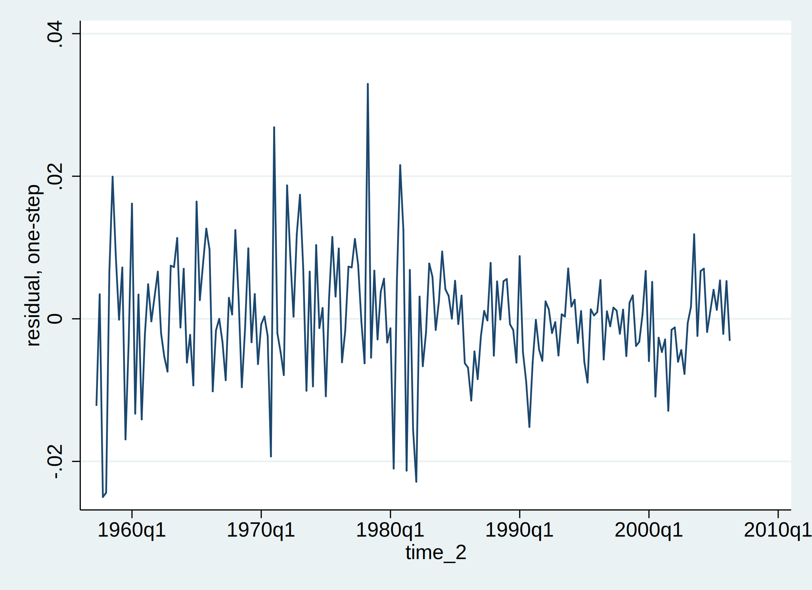
-1 0 1 -1 0 1
LAG AC PAC Q Prob>Q [Autocorrelation] [Partial Autocor]
-------------------------------------------------------------------------------
1 0.0130 0.0130 .03374 0.8543 | |
2 0.0045 0.0043 .0379 0.9812 | |
3 -0.0314 -0.0313 .23713 0.9714 | |
4 0.0407 0.0412 .57351 0.9660 | |
5 -0.0759 -0.0764 1.7484 0.8827 | |
6 0.0432 0.0415 2.1311 0.9073 | |
7 0.0311 0.0363 2.3306 0.9393 | |
8 -0.0967 -0.1042 4.2717 0.8318 | |
9 0.0599 0.0707 5.0192 0.8326 | |
10 -0.0340 -0.0416 5.2617 0.8730 | |
11 -0.0155 -0.0203 5.3126 0.9151 | |
12 -0.0590 -0.0408 6.0504 0.9135 | |
13 0.0143 -0.0101 6.094 0.9427 | |
14 0.0151 0.0414 6.1427 0.9628 | |
15 -0.0450 -0.0655 6.5795 0.9683 | |
16 0.1082 0.1229 9.114 0.9086 | |
17 -0.0378 -0.0428 9.4259 0.9259 | |
18 0.1111 0.1084 12.128 0.8405 | |
19 0.0124 0.0387 12.162 0.8786 | |
20 0.1268 0.0806 15.726 0.7335 |- |
21 -0.0257 0.0346 15.873 0.7767 | |
22 0.0191 -0.0310 15.955 0.8181 | |
23 -0.0888 -0.0855 17.733 0.7718 | |
24 0.0057 0.0122 17.74 0.8154 | | Portmanteau test for white noise
---------------------------------------
Portmanteau (Q) statistic = 17.7404
Prob > chi2(24) = 0.81545.1.4 Estimation & Diagnostics (Pure MA)
5.1.4.1 Estimation
(setting optimization to BHHH)
Iteration 0: log likelihood = 649.86494
Iteration 1: log likelihood = 650.03192
Iteration 2: log likelihood = 650.05111
Iteration 3: log likelihood = 650.05378
Iteration 4: log likelihood = 650.05426
(switching optimization to BFGS)
Iteration 5: log likelihood = 650.05436
Iteration 6: log likelihood = 650.05438
ARIMA regression
Sample: 1957q2 - 2006q2 Number of obs = 197
Wald chi2(2) = 34.99
Log likelihood = 650.0544 Prob > chi2 = 0.0000
------------------------------------------------------------------------------
| OPG
D.yyy | Coef. Std. Err. z P>|z| [95% Conf. Interval]
-------------+----------------------------------------------------------------
yyy |
_cons | .0170418 .0009994 17.05 0.000 .0150831 .0190006
-------------+----------------------------------------------------------------
ARMA |
ma |
L1. | .3175348 .0561098 5.66 0.000 .2075616 .4275081
L2. | .1970972 .0587295 3.36 0.001 .0819894 .3122049
-------------+----------------------------------------------------------------
/sigma | .008923 .0003074 29.03 0.000 .0083206 .0095254
------------------------------------------------------------------------------
Note: The test of the variance against zero is one sided, and the two-sided
confidence interval is truncated at zero.(setting optimization to BHHH)
Iteration 0: log likelihood = 660.37262
Iteration 1: log likelihood = 661.42755
Iteration 2: log likelihood = 661.68345
Iteration 3: log likelihood = 661.69705
Iteration 4: log likelihood = 661.71826
(switching optimization to BFGS)
Iteration 5: log likelihood = 661.87331
Iteration 6: log likelihood = 661.88088
Iteration 7: log likelihood = 661.88278
Iteration 8: log likelihood = 661.88288
Iteration 9: log likelihood = 661.88293
ARIMA regression
Sample: 1957q2 - 2006q2 Number of obs = 197
Wald chi2(11) = 49.19
Log likelihood = 661.8829 Prob > chi2 = 0.0000
------------------------------------------------------------------------------
| OPG
D.yyy | Coef. Std. Err. z P>|z| [95% Conf. Interval]
-------------+----------------------------------------------------------------
yyy |
_cons | .0168882 .001356 12.45 0.000 .0142304 .0195459
-------------+----------------------------------------------------------------
ARMA |
ma |
L1. | .2891741 .0631211 4.58 0.000 .1654589 .4128893
L2. | .1830966 .0772815 2.37 0.018 .0316276 .3345655
L3. | .0449302 .0742129 0.61 0.545 -.1005245 .1903848
L4. | .179056 .0653367 2.74 0.006 .0509985 .3071135
L5. | -.0157297 .0698791 -0.23 0.822 -.1526902 .1212308
L6. | .0753758 .0823752 0.92 0.360 -.0860766 .2368281
L7. | .0098652 .0845196 0.12 0.907 -.1557902 .1755207
L8. | -.0474722 .075853 -0.63 0.531 -.1961413 .1011968
L9. | .0187734 .0728795 0.26 0.797 -.1240677 .1616146
L10. | .1631258 .0739421 2.21 0.027 .018202 .3080496
L11. | .2618914 .0838967 3.12 0.002 .0974569 .426326
-------------+----------------------------------------------------------------
/sigma | .0083804 .0003413 24.56 0.000 .0077115 .0090492
------------------------------------------------------------------------------
Note: The test of the variance against zero is one sided, and the two-sided
confidence interval is truncated at zero.
l3.ar not found
r(111);
end of do-file
r(111);(setting optimization to BHHH)
Iteration 0: log likelihood = 660.10946
Iteration 1: log likelihood = 660.45577
Iteration 2: log likelihood = 660.51453
Iteration 3: log likelihood = 660.52955
Iteration 4: log likelihood = 660.53352
(switching optimization to BFGS)
Iteration 5: log likelihood = 660.5347
Iteration 6: log likelihood = 660.53524
Iteration 7: log likelihood = 660.53526
ARIMA regression
Sample: 1957q2 - 2006q2 Number of obs = 197
Wald chi2(5) = 58.32
Log likelihood = 660.5353 Prob > chi2 = 0.0000
------------------------------------------------------------------------------
| OPG
D.yyy | Coef. Std. Err. z P>|z| [95% Conf. Interval]
-------------+----------------------------------------------------------------
yyy |
_cons | .0168866 .0012613 13.39 0.000 .0144144 .0193588
-------------+----------------------------------------------------------------
ARMA |
ma |
L1. | .2919739 .0586594 4.98 0.000 .1770036 .4069442
L2. | .146004 .0698232 2.09 0.037 .009153 .282855
L4. | .1824151 .0615452 2.96 0.003 .0617886 .3030415
L10. | .1718678 .063352 2.71 0.007 .0477002 .2960354
L11. | .2708313 .076412 3.54 0.000 .1210665 .4205961
-------------+----------------------------------------------------------------
/sigma | .0084366 .0003307 25.51 0.000 .0077885 .0090847
------------------------------------------------------------------------------
Note: The test of the variance against zero is one sided, and the two-sided
confidence interval is truncated at zero.5.1.4.2 Diagnostics

-1 0 1 -1 0 1
LAG AC PAC Q Prob>Q [Autocorrelation] [Partial Autocor]
-------------------------------------------------------------------------------
1 0.0022 0.0022 .00101 0.9747 | |
2 0.0610 0.0611 .74976 0.6874 | |
3 0.0556 0.0553 1.375 0.7114 | |
4 -0.0601 -0.0611 2.1087 0.7158 | |
5 -0.0145 -0.0215 2.1514 0.8278 | |
6 0.0974 0.1038 4.0997 0.6632 | |
7 0.0300 0.0457 4.286 0.7463 | |
8 -0.0400 -0.0564 4.6187 0.7974 | |
9 0.0779 0.0573 5.8826 0.7516 | |
10 0.0048 0.0211 5.8874 0.8246 | |
11 0.0176 0.0154 5.9528 0.8765 | |
12 0.1098 0.0927 8.5084 0.7442 | |
13 0.0718 0.0759 9.6082 0.7256 | |
14 0.0617 0.0540 10.423 0.7307 | |
15 0.0127 -0.0210 10.457 0.7900 | |
16 0.0896 0.0828 12.197 0.7303 | |
17 -0.0238 -0.0142 12.321 0.7803 | |
18 0.1115 0.0949 15.044 0.6589 | |
19 0.0302 0.0139 15.246 0.7069 | |
20 0.1282 0.1256 18.887 0.5292 |- |-
21 0.0562 0.0536 19.591 0.5473 | |
22 0.0634 0.0320 20.492 0.5523 | |
23 -0.0728 -0.0983 21.685 0.5393 | |
24 0.0337 0.0260 21.943 0.5827 | | Portmanteau test for white noise
---------------------------------------
Portmanteau (Q) statistic = 21.9428
Prob > chi2(24) = 0.5827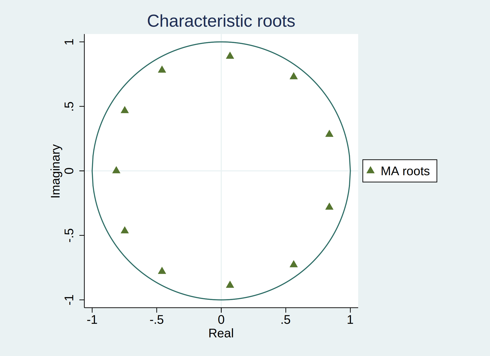
5.1.5 Estimation & Diagnostics (Additive seasonal ARIMA)
(setting optimization to BHHH)
Iteration 0: log likelihood = 649.57134
Iteration 1: log likelihood = 652.00647
Iteration 2: log likelihood = 652.70584
Iteration 3: log likelihood = 654.03984
Iteration 4: log likelihood = 655.16373
(switching optimization to BFGS)
Iteration 5: log likelihood = 655.20524
Iteration 6: log likelihood = 655.20653
Iteration 7: log likelihood = 655.20731
Iteration 8: log likelihood = 655.20744
Iteration 9: log likelihood = 655.20744
ARIMA regression
Sample: 1957q2 - 2006q2 Number of obs = 197
Wald chi2(4) = 1272.63
Log likelihood = 655.2074 Prob > chi2 = 0.0000
------------------------------------------------------------------------------
| OPG
D.yyy | Coef. Std. Err. z P>|z| [95% Conf. Interval]
-------------+----------------------------------------------------------------
yyy |
_cons | .0159353 .0024205 6.58 0.000 .0111913 .0206793
-------------+----------------------------------------------------------------
ARMA |
ar |
L1. | .6212828 .1257041 4.94 0.000 .3749072 .8676584
L4. | .3288232 .1227238 2.68 0.007 .0882891 .5693574
|
ma |
L1. | -.3816978 .1451447 -2.63 0.009 -.6661761 -.0972194
L4. | -.3654086 .1288975 -2.83 0.005 -.618043 -.1127742
-------------+----------------------------------------------------------------
/sigma | .0086828 .0003262 26.62 0.000 .0080434 .0093222
------------------------------------------------------------------------------
Note: The test of the variance against zero is one sided, and the two-sided
confidence interval is truncated at zero.
-1 0 1 -1 0 1
LAG AC PAC Q Prob>Q [Autocorrelation] [Partial Autocor]
-------------------------------------------------------------------------------
1 0.0215 0.0215 .09214 0.7615 | |
2 0.0342 0.0339 .32795 0.8488 | |
3 -0.0738 -0.0756 1.43 0.6985 | |
4 0.0430 0.0445 1.8056 0.7715 | |
5 -0.1649 -0.1632 7.3565 0.1954 -| -|
6 -0.0400 -0.0458 7.6849 0.2621 | |
7 -0.0324 -0.0133 7.9021 0.3413 | |
8 -0.1126 -0.1369 10.53 0.2298 | -|
9 0.0244 0.0429 10.654 0.3002 | |
10 0.1299 0.1251 14.194 0.1643 |- |-
11 0.1609 0.1476 19.65 0.0504 |- |-
12 -0.0162 -0.0192 19.705 0.0729 | |
13 0.0059 -0.0337 19.713 0.1026 | |
14 0.0250 0.0343 19.847 0.1350 | |
15 -0.0752 -0.0860 21.066 0.1347 | |
16 0.0697 0.1379 22.117 0.1394 | |-
17 -0.0580 -0.0489 22.85 0.1542 | |
18 0.0779 0.0924 24.18 0.1492 | |
19 -0.0533 -0.0024 24.805 0.1671 | |
20 0.1247 0.0293 28.251 0.1036 | |
21 0.0142 0.0597 28.296 0.1320 | |
22 0.0386 -0.0121 28.63 0.1557 | |
23 -0.0927 -0.0378 30.567 0.1338 | |
24 0.0184 0.0230 30.644 0.1643 | | Portmanteau test for white noise
---------------------------------------
Portmanteau (Q) statistic = 30.6440
Prob > chi2(24) = 0.1643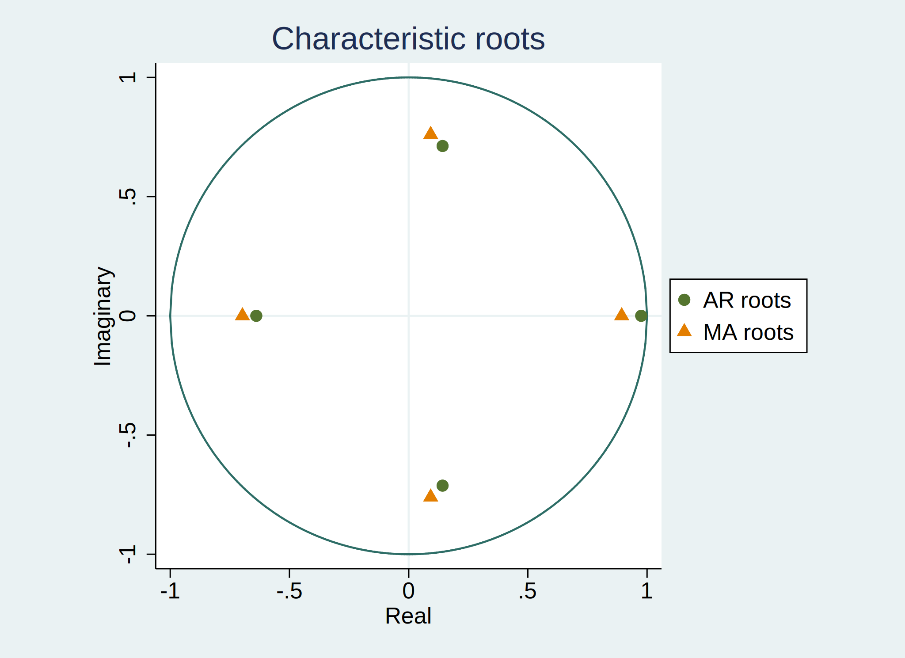
5.1.6 Estimation & Diagnostics (Multiplicative seasonal ARIMA)
5.1.6.1 ARMA with seasonal components
(setting optimization to BHHH)
Iteration 0: log likelihood = 649.89655 (not concave)
Iteration 1: log likelihood = 651.86926
Iteration 2: log likelihood = 652.58909
Iteration 3: log likelihood = 652.72551
Iteration 4: log likelihood = 652.75109
(switching optimization to BFGS)
Iteration 5: log likelihood = 652.76074
Iteration 6: log likelihood = 652.76483
Iteration 7: log likelihood = 652.76508
Iteration 8: log likelihood = 652.76509
ARIMA regression
Sample: 1957q2 - 2006q2 Number of obs = 197
Wald chi2(4) = 90.80
Log likelihood = 652.7651 Prob > chi2 = 0.0000
------------------------------------------------------------------------------
| OPG
D.yyy | Coef. Std. Err. z P>|z| [95% Conf. Interval]
-------------+----------------------------------------------------------------
yyy |
_cons | .0169608 .0012976 13.07 0.000 .0144175 .019504
-------------+----------------------------------------------------------------
ARMA |
ar |
L1. | .6313137 .1293726 4.88 0.000 .377748 .8848794
|
ma |
L1. | -.3047184 .1524066 -2.00 0.046 -.6034298 -.0060071
-------------+----------------------------------------------------------------
ARMA4 |
ar |
L1. | -.3287778 .5762388 -0.57 0.568 -1.458185 .8006295
|
ma |
L1. | .4299363 .5597762 0.77 0.442 -.6672049 1.527078
-------------+----------------------------------------------------------------
/sigma | .0087986 .0003159 27.85 0.000 .0081794 .0094178
------------------------------------------------------------------------------
Note: The test of the variance against zero is one sided, and the two-sided
confidence interval is truncated at zero.(setting optimization to BHHH)
Iteration 0: log likelihood = 649.89655
Iteration 1: log likelihood = 652.10292
Iteration 2: log likelihood = 652.48319
Iteration 3: log likelihood = 652.52543
Iteration 4: log likelihood = 652.52704
(switching optimization to BFGS)
Iteration 5: log likelihood = 652.5272
Iteration 6: log likelihood = 652.52722
ARIMA regression
Sample: 1957q2 - 2006q2 Number of obs = 197
Wald chi2(3) = 80.16
Log likelihood = 652.5272 Prob > chi2 = 0.0000
------------------------------------------------------------------------------
| OPG
D.yyy | Coef. Std. Err. z P>|z| [95% Conf. Interval]
-------------+----------------------------------------------------------------
yyy |
_cons | .0169485 .0012989 13.05 0.000 .0144027 .0194944
-------------+----------------------------------------------------------------
ARMA |
ar |
L1. | .607155 .134004 4.53 0.000 .3445121 .8697979
|
ma |
L1. | -.2784244 .1554106 -1.79 0.073 -.5830235 .0261747
-------------+----------------------------------------------------------------
ARMA4 |
ma |
L1. | .1095105 .0644338 1.70 0.089 -.0167773 .2357984
-------------+----------------------------------------------------------------
/sigma | .0088095 .0003117 28.26 0.000 .0081985 .0094204
------------------------------------------------------------------------------
Note: The test of the variance against zero is one sided, and the two-sided
confidence interval is truncated at zero.(setting optimization to BHHH)
Iteration 0: log likelihood = 649.89655
Iteration 1: log likelihood = 652.02911
Iteration 2: log likelihood = 652.34947
Iteration 3: log likelihood = 652.37937
Iteration 4: log likelihood = 652.38529
(switching optimization to BFGS)
Iteration 5: log likelihood = 652.38654
Iteration 6: log likelihood = 652.38687
Iteration 7: log likelihood = 652.38687
ARIMA regression
Sample: 1957q2 - 2006q2 Number of obs = 197
Wald chi2(3) = 81.62
Log likelihood = 652.3869 Prob > chi2 = 0.0000
------------------------------------------------------------------------------
| OPG
D.yyy | Coef. Std. Err. z P>|z| [95% Conf. Interval]
-------------+----------------------------------------------------------------
yyy |
_cons | .016949 .0013079 12.96 0.000 .0143856 .0195125
-------------+----------------------------------------------------------------
ARMA |
ar |
L1. | .6229129 .1316006 4.73 0.000 .3649806 .8808452
|
ma |
L1. | -.2986446 .1541153 -1.94 0.053 -.6007051 .0034159
-------------+----------------------------------------------------------------
ARMA4 |
ar |
L1. | .0880324 .0651807 1.35 0.177 -.0397194 .2157843
-------------+----------------------------------------------------------------
/sigma | .0088165 .000311 28.35 0.000 .0082069 .0094261
------------------------------------------------------------------------------
Note: The test of the variance against zero is one sided, and the two-sided
confidence interval is truncated at zero. -1 0 1 -1 0 1
LAG AC PAC Q Prob>Q [Autocorrelation] [Partial Autocor]
-------------------------------------------------------------------------------
1 -0.0094 -0.0094 .01773 0.8941 | |
2 0.0380 0.0381 .30823 0.8572 | |
3 -0.0463 -0.0465 .74189 0.8633 | |
4 -0.0265 -0.0298 .88439 0.9268 | |
5 -0.0597 -0.0575 1.613 0.8997 | |
6 0.0523 0.0514 2.1747 0.9029 | |
7 0.0388 0.0468 2.4851 0.9282 | |
8 -0.0633 -0.0707 3.3158 0.9130 | |
9 0.0925 0.0901 5.1012 0.8254 | |
10 0.1641 0.1804 10.746 0.3776 |- |-
11 0.2127 0.2308 20.285 0.0416 |- |-
12 0.0034 0.0151 20.287 0.0618 | |
13 0.0372 0.0245 20.581 0.0816 | |
14 0.0323 0.0797 20.805 0.1067 | |
15 -0.0533 -0.0406 21.417 0.1240 | |
16 0.1125 0.1242 24.156 0.0861 | |
17 -0.0297 -0.0450 24.349 0.1103 | |
18 0.1077 0.1085 26.89 0.0811 | |
19 -0.0075 0.0096 26.902 0.1069 | |
20 0.1427 0.0570 31.41 0.0500 |- |
21 0.0364 0.0350 31.704 0.0627 | |
22 0.0585 0.0042 32.47 0.0697 | |
23 -0.0736 -0.0618 33.689 0.0698 | |
24 0.0218 -0.0052 33.796 0.0884 | | Portmanteau test for white noise
---------------------------------------
Portmanteau (Q) statistic = 33.7963
Prob > chi2(24) = 0.0884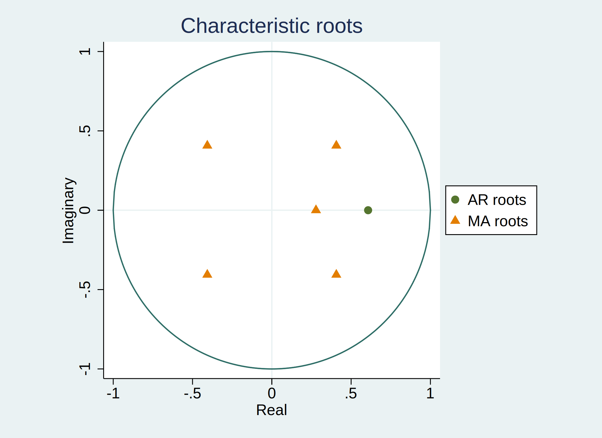
5.1.6.2 AR with seasonal components
(setting optimization to BHHH)
Iteration 0: log likelihood = 651.74694 (not concave)
Iteration 1: log likelihood = 652.56457
Iteration 2: log likelihood = 652.71036
Iteration 3: log likelihood = 652.9278
Iteration 4: log likelihood = 652.9594
(switching optimization to BFGS)
Iteration 5: log likelihood = 652.96293
Iteration 6: log likelihood = 652.96521
Iteration 7: log likelihood = 652.96554
Iteration 8: log likelihood = 652.96558
ARIMA regression
Sample: 1957q2 - 2006q2 Number of obs = 197
Wald chi2(4) = 58.90
Log likelihood = 652.9656 Prob > chi2 = 0.0000
------------------------------------------------------------------------------
| OPG
D.yyy | Coef. Std. Err. z P>|z| [95% Conf. Interval]
-------------+----------------------------------------------------------------
yyy |
_cons | .0169804 .0012789 13.28 0.000 .0144738 .0194871
-------------+----------------------------------------------------------------
ARMA |
ar |
L1. | .3219026 .0572563 5.62 0.000 .2096824 .4341228
L2. | .1283119 .0598028 2.15 0.032 .0111006 .2455233
-------------+----------------------------------------------------------------
ARMA4 |
ar |
L1. | -.2944317 .538507 -0.55 0.585 -1.349886 .7610226
|
ma |
L1. | .4076916 .5250834 0.78 0.437 -.6214529 1.436836
-------------+----------------------------------------------------------------
/sigma | .00879 .0003137 28.02 0.000 .0081751 .0094048
------------------------------------------------------------------------------
Note: The test of the variance against zero is one sided, and the two-sided
confidence interval is truncated at zero.(setting optimization to BHHH)
Iteration 0: log likelihood = 651.74694
Iteration 1: log likelihood = 652.61302
Iteration 2: log likelihood = 652.71036
Iteration 3: log likelihood = 652.72799
Iteration 4: log likelihood = 652.73179
(switching optimization to BFGS)
Iteration 5: log likelihood = 652.73251
Iteration 6: log likelihood = 652.73263
Iteration 7: log likelihood = 652.73263
ARIMA regression
Sample: 1957q2 - 2006q2 Number of obs = 197
Wald chi2(3) = 54.75
Log likelihood = 652.7326 Prob > chi2 = 0.0000
------------------------------------------------------------------------------
| OPG
D.yyy | Coef. Std. Err. z P>|z| [95% Conf. Interval]
-------------+----------------------------------------------------------------
yyy |
_cons | .0169633 .0012929 13.12 0.000 .0144293 .0194974
-------------+----------------------------------------------------------------
ARMA |
ar |
L1. | .3221785 .0575096 5.60 0.000 .2094617 .4348953
L2. | .1199752 .0583889 2.05 0.040 .0055351 .2344153
-------------+----------------------------------------------------------------
ARMA4 |
ma |
L1. | .119089 .059717 1.99 0.046 .0020458 .2361322
-------------+----------------------------------------------------------------
/sigma | .0088005 .0003095 28.43 0.000 .0081939 .0094072
------------------------------------------------------------------------------
Note: The test of the variance against zero is one sided, and the two-sided
confidence interval is truncated at zero.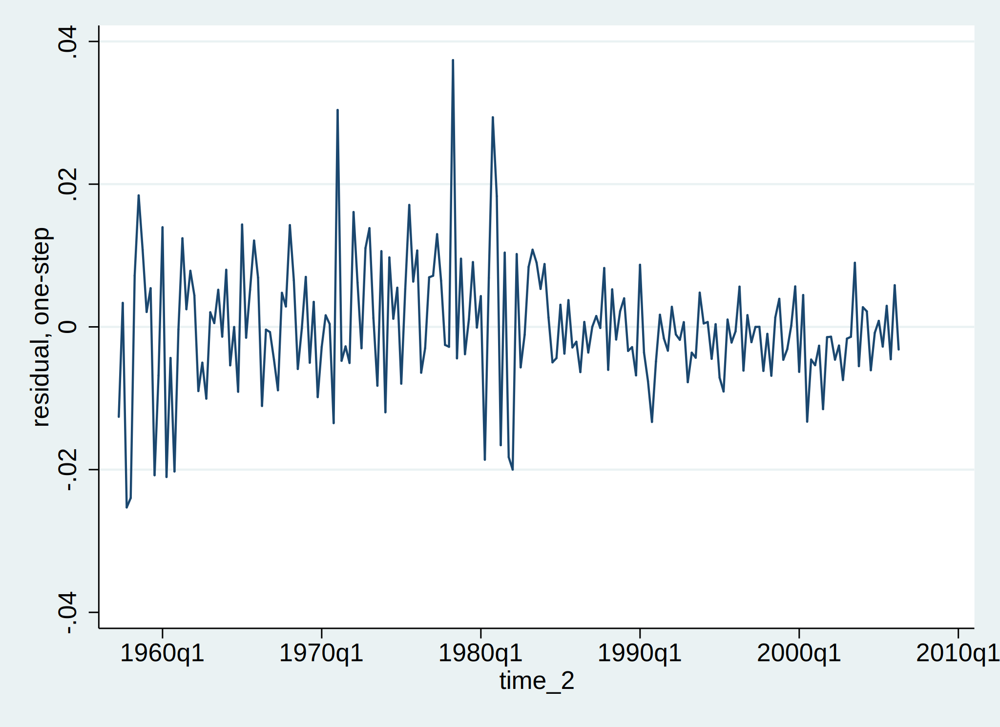
-1 0 1 -1 0 1
LAG AC PAC Q Prob>Q [Autocorrelation] [Partial Autocor]
-------------------------------------------------------------------------------
1 -0.0009 -0.0009 .00016 0.9900 | |
2 0.0118 0.0118 .028 0.9861 | |
3 -0.0256 -0.0258 .16079 0.9837 | |
4 -0.0263 -0.0271 .30083 0.9898 | |
5 -0.0516 -0.0521 .84551 0.9740 | |
6 0.0615 0.0613 1.6227 0.9509 | |
7 0.0433 0.0486 2.0096 0.9593 | |
8 -0.0630 -0.0658 2.8317 0.9445 | |
9 0.0888 0.0874 4.4764 0.8774 | |
10 0.1700 0.1807 10.534 0.3950 |- |-
11 0.2117 0.2340 19.98 0.0456 |- |-
12 0.0018 0.0143 19.98 0.0675 | |
13 0.0388 0.0334 20.301 0.0879 | |
14 0.0340 0.0710 20.549 0.1138 | |
15 -0.0483 -0.0364 21.052 0.1352 | |
16 0.1119 0.1203 23.766 0.0947 | |
17 -0.0220 -0.0481 23.871 0.1230 | |
18 0.1022 0.1109 26.159 0.0962 | |
19 -0.0016 0.0032 26.159 0.1258 | |
20 0.1381 0.0602 30.38 0.0639 |- |
21 0.0436 0.0335 30.803 0.0770 | |
22 0.0562 0.0056 31.51 0.0861 | |
23 -0.0723 -0.0643 32.687 0.0867 | |
24 0.0228 -0.0073 32.805 0.1083 | | Portmanteau test for white noise
---------------------------------------
Portmanteau (Q) statistic = 32.8049
Prob > chi2(24) = 0.1083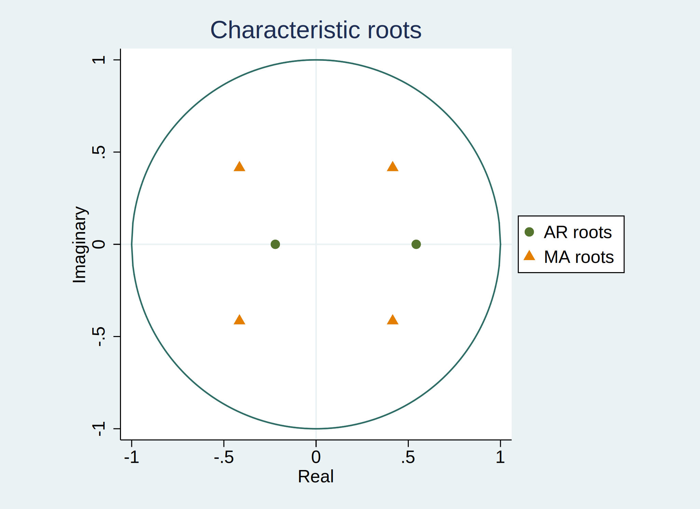
(setting optimization to BHHH)
Iteration 0: log likelihood = 651.74694
Iteration 1: log likelihood = 652.47638
Iteration 2: log likelihood = 652.54234
Iteration 3: log likelihood = 652.55606
Iteration 4: log likelihood = 652.5595
(switching optimization to BFGS)
Iteration 5: log likelihood = 652.56038
Iteration 6: log likelihood = 652.56068
Iteration 7: log likelihood = 652.56069
ARIMA regression
Sample: 1957q2 - 2006q2 Number of obs = 197
Wald chi2(3) = 52.84
Log likelihood = 652.5607 Prob > chi2 = 0.0000
------------------------------------------------------------------------------
| OPG
D.yyy | Coef. Std. Err. z P>|z| [95% Conf. Interval]
-------------+----------------------------------------------------------------
yyy |
_cons | .0169659 .0012928 13.12 0.000 .0144321 .0194997
-------------+----------------------------------------------------------------
ARMA |
ar |
L1. | .3197828 .0575683 5.55 0.000 .2069509 .4326147
L2. | .1224327 .0582824 2.10 0.036 .0082013 .2366641
-------------+----------------------------------------------------------------
ARMA4 |
ar |
L1. | .1001421 .0604763 1.66 0.098 -.0183893 .2186735
-------------+----------------------------------------------------------------
/sigma | .0088086 .0003082 28.58 0.000 .0082046 .0094126
------------------------------------------------------------------------------
Note: The test of the variance against zero is one sided, and the two-sided
confidence interval is truncated at zero. -1 0 1 -1 0 1
LAG AC PAC Q Prob>Q [Autocorrelation] [Partial Autocor]
-------------------------------------------------------------------------------
1 -0.0010 -0.0011 .00022 0.9882 | |
2 0.0084 0.0085 .01453 0.9928 | |
3 -0.0272 -0.0273 .16354 0.9832 | |
4 -0.0094 -0.0102 .18145 0.9961 | |
5 -0.0504 -0.0506 .69986 0.9830 | |
6 0.0643 0.0631 1.5475 0.9563 | |
7 0.0470 0.0523 2.0037 0.9596 | |
8 -0.0769 -0.0793 3.2298 0.9191 | |
9 0.0885 0.0888 4.8617 0.8462 | |
10 0.1711 0.1802 10.997 0.3578 |- |-
11 0.2121 0.2326 20.475 0.0392 |- |-
12 0.0017 0.0171 20.475 0.0586 | |
13 0.0400 0.0318 20.815 0.0767 | |
14 0.0372 0.0709 21.112 0.0988 | |
15 -0.0438 -0.0390 21.526 0.1209 | |
16 0.1143 0.1217 24.357 0.0820 | |
17 -0.0219 -0.0485 24.461 0.1074 | |
18 0.1011 0.1118 26.701 0.0848 | |
19 -0.0067 0.0049 26.71 0.1116 | |
20 0.1401 0.0566 31.058 0.0544 |- |
21 0.0438 0.0360 31.485 0.0660 | |
22 0.0585 0.0050 32.251 0.0732 | |
23 -0.0715 -0.0652 33.404 0.0743 | |
24 0.0241 -0.0049 33.535 0.0933 | | Portmanteau test for white noise
---------------------------------------
Portmanteau (Q) statistic = 33.5354
Prob > chi2(24) = 0.0933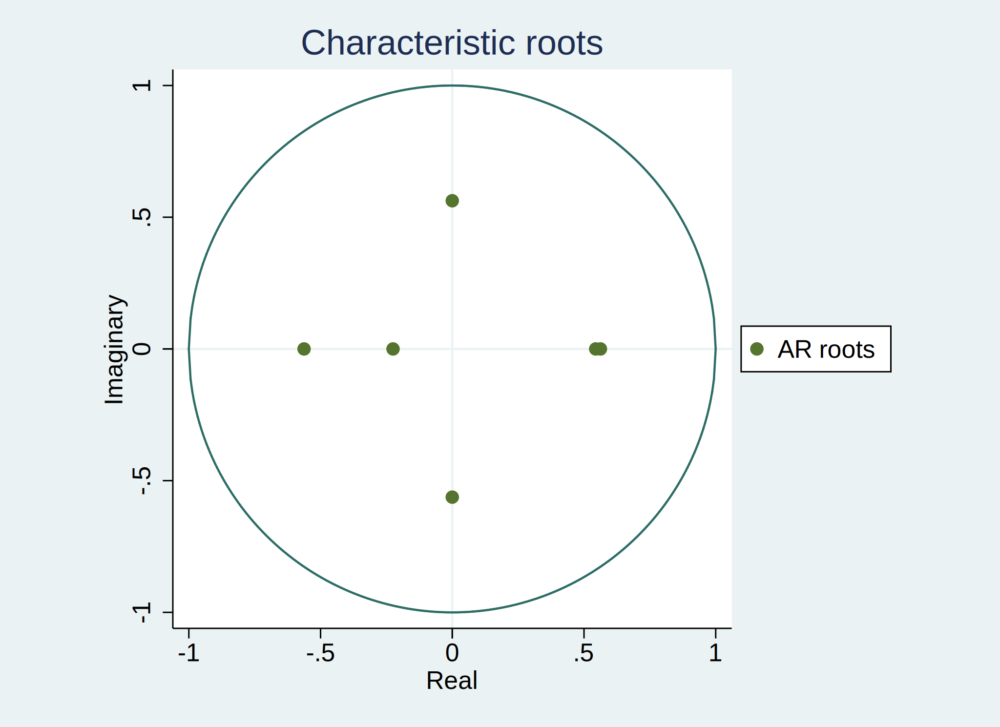
5.1.7 Model selection: use common sample
/* Stata -arima- command uses exact MLE, so T=198-1 for all models */
quietly arima yyy, arima(1,1,1)
estat ic
quietly arima d.yyy, ma(1 2 4 10 11) /* best according to AIC & SBC */
estat ic
quietly arima yyy, arima(1,1,1) mma(1,4)
estat ic
quietly arima yyy, arima(2,1,0) mma(1,4)
estat ic
quietly arima yyy, arima(2,1,0) mar(1,4)
estat icAkaike's information criterion and Bayesian information criterion
-----------------------------------------------------------------------------
Model | Obs ll(null) ll(model) df AIC BIC
-------------+---------------------------------------------------------------
. | 197 . 651.9862 4 -1295.972 -1282.84
-----------------------------------------------------------------------------
Note: N=Obs used in calculating BIC; see [R] BIC note.
Akaike's information criterion and Bayesian information criterion
-----------------------------------------------------------------------------
Model | Obs ll(null) ll(model) df AIC BIC
-------------+---------------------------------------------------------------
. | 197 . 660.5353 7 -1307.071 -1284.088
-----------------------------------------------------------------------------
Note: N=Obs used in calculating BIC; see [R] BIC note.
Akaike's information criterion and Bayesian information criterion
-----------------------------------------------------------------------------
Model | Obs ll(null) ll(model) df AIC BIC
-------------+---------------------------------------------------------------
. | 197 . 652.5272 5 -1295.054 -1278.638
-----------------------------------------------------------------------------
Note: N=Obs used in calculating BIC; see [R] BIC note.
Akaike's information criterion and Bayesian information criterion
-----------------------------------------------------------------------------
Model | Obs ll(null) ll(model) df AIC BIC
-------------+---------------------------------------------------------------
. | 197 . 652.7326 5 -1295.465 -1279.049
-----------------------------------------------------------------------------
Note: N=Obs used in calculating BIC; see [R] BIC note.
Akaike's information criterion and Bayesian information criterion
-----------------------------------------------------------------------------
Model | Obs ll(null) ll(model) df AIC BIC
-------------+---------------------------------------------------------------
. | 197 . 652.5607 5 -1295.121 -1278.705
-----------------------------------------------------------------------------
Note: N=Obs used in calculating BIC; see [R] BIC note.5.2 ARMA Modeling: d2.yyy
5.2.1 Identification
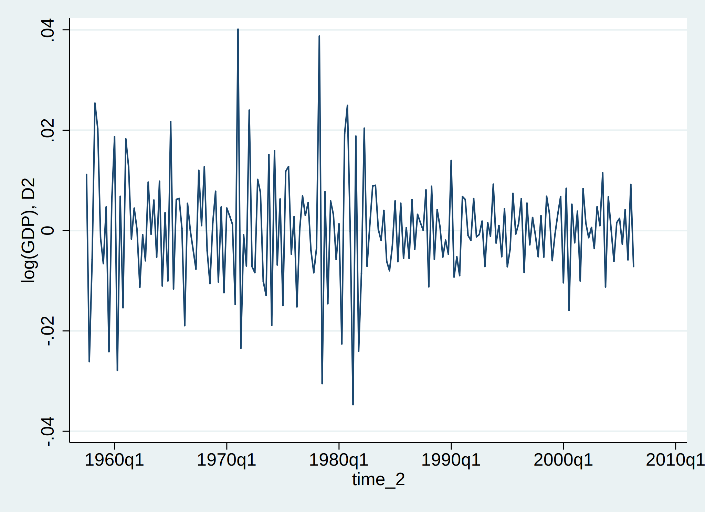
/* standard error: Bartlett formula for MA(q), see classnotes 2.3.2 */
ac d2.yyy, lags(24) level(95) 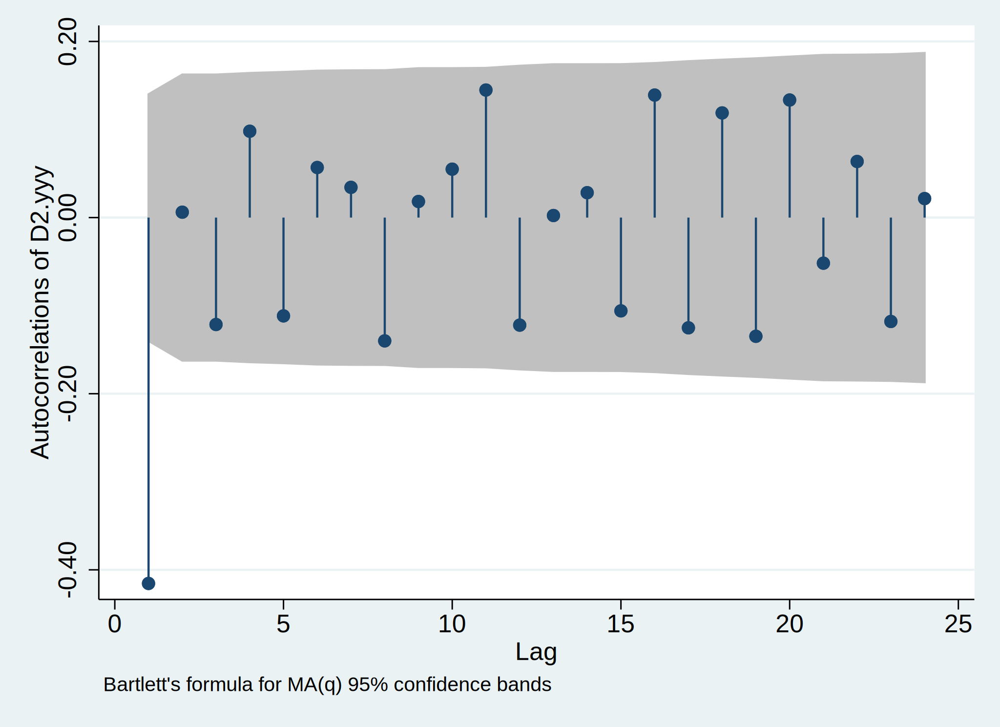
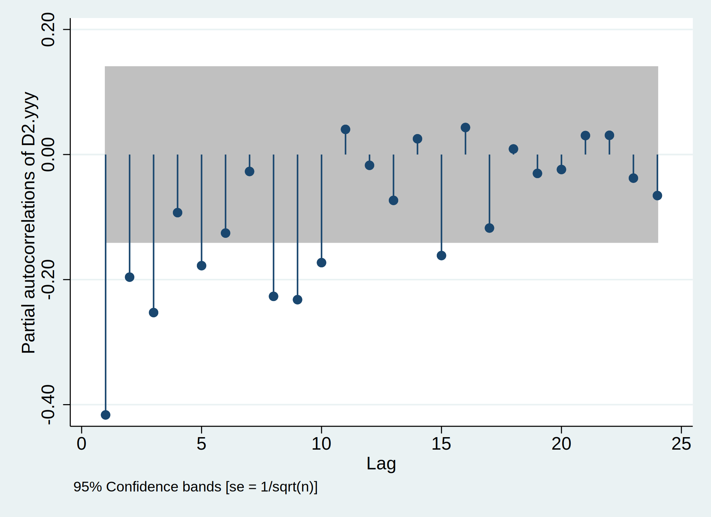
5.2.2 Estimation & Diagnostics
5.2.2.1 Pure MA
/* by default, Stata estimate ARIMA using exact MLE */
arima yyy, arima(0,2,1) /* pure MA */
/* arima d2.yyy, arima(0,0,1) */
/* arima d2.yyy, ma(1) */(setting optimization to BHHH)
Iteration 0: log likelihood = 643.01338
Iteration 1: log likelihood = 646.58405
Iteration 2: log likelihood = 646.67078
Iteration 3: log likelihood = 646.6792
Iteration 4: log likelihood = 646.68025
(switching optimization to BFGS)
Iteration 5: log likelihood = 646.6804
Iteration 6: log likelihood = 646.68042
ARIMA regression
Sample: 1957q3 - 2006q2 Number of obs = 196
Wald chi2(1) = 496.29
Log likelihood = 646.6804 Prob > chi2 = 0.0000
------------------------------------------------------------------------------
| OPG
D2.yyy | Coef. Std. Err. z P>|z| [95% Conf. Interval]
-------------+----------------------------------------------------------------
yyy |
_cons | .0000297 .0000846 0.35 0.726 -.0001361 .0001954
-------------+----------------------------------------------------------------
ARMA |
ma |
L1. | -.8812804 .0395591 -22.28 0.000 -.9588148 -.803746
-------------+----------------------------------------------------------------
/sigma | .0088959 .000346 25.71 0.000 .0082178 .009574
------------------------------------------------------------------------------
Note: The test of the variance against zero is one sided, and the two-sided
confidence interval is truncated at zero.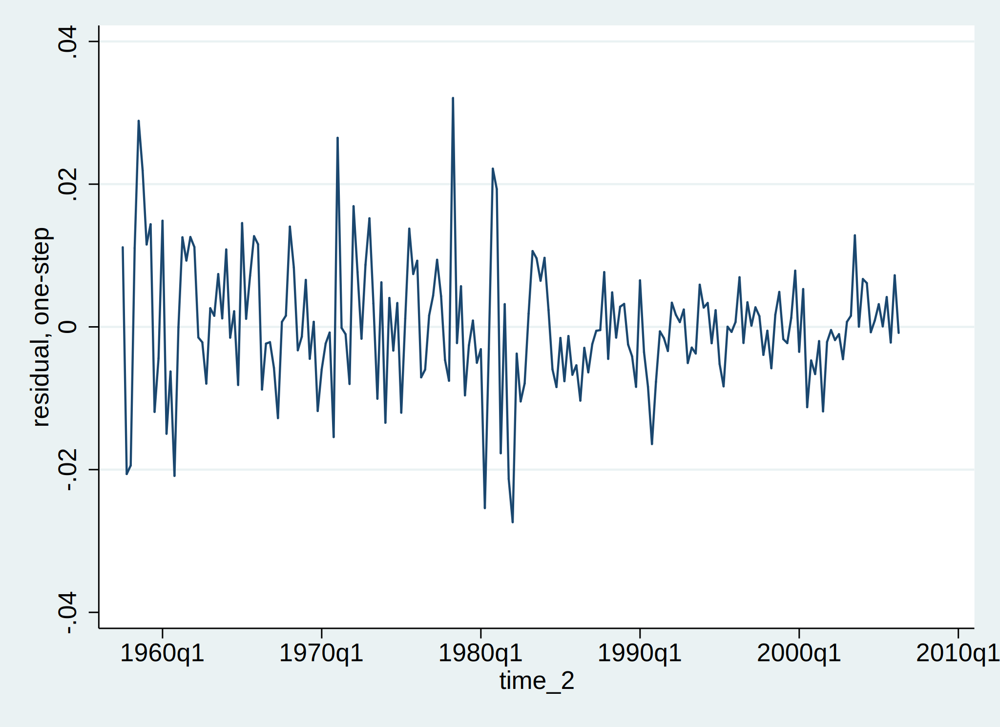
-1 0 1 -1 0 1
LAG AC PAC Q Prob>Q [Autocorrelation] [Partial Autocor]
-------------------------------------------------------------------------------
1 0.1762 0.1763 6.1819 0.0129 |- |-
2 0.0391 0.0053 6.4876 0.0390 | |
3 -0.0999 -0.1142 8.496 0.0368 | |
4 -0.0383 0.0012 8.7932 0.0665 | |
5 -0.1389 -0.1206 12.713 0.0262 -| |
6 -0.0579 -0.0218 13.397 0.0371 | |
7 -0.0655 -0.0447 14.277 0.0465 | |
8 -0.1451 -0.1600 18.624 0.0170 -| -|
9 0.0043 0.0456 18.628 0.0285 | |
10 0.1398 0.1298 22.706 0.0119 |- |-
11 0.1821 0.1160 29.659 0.0018 |- |
12 -0.0047 -0.0761 29.664 0.0031 | |
13 -0.0055 -0.0298 29.67 0.0053 | |
14 -0.0090 0.0255 29.687 0.0084 | |
15 -0.0573 -0.0588 30.39 0.0106 | |
16 0.0642 0.1331 31.279 0.0124 | |-
17 -0.0377 -0.0592 31.587 0.0169 | |
18 0.0696 0.1159 32.642 0.0184 | |
19 -0.0175 0.0023 32.71 0.0260 | |
20 0.1155 0.0385 35.651 0.0169 | |
21 0.0277 0.0319 35.821 0.0229 | |
22 0.0265 -0.0186 35.977 0.0305 | |
23 -0.0794 -0.0106 37.391 0.0296 | |
24 0.0071 0.0530 37.402 0.0399 | | Portmanteau test for white noise
---------------------------------------
Portmanteau (Q) statistic = 37.4018
Prob > chi2(24) = 0.03995.2.2.2 ARMA
arima yyy, arima(1,2,1) /* mixed ARMA: keep */
/* arima d2.yyy, arima(1,0,1) */
/* arima d2.yyy, ar(1) ma(1) */(setting optimization to BHHH)
Iteration 0: log likelihood = 634.47054
Iteration 1: log likelihood = 644.33538
Iteration 2: log likelihood = 648.84623
Iteration 3: log likelihood = 649.86633
Iteration 4: log likelihood = 650.0302
(switching optimization to BFGS)
Iteration 5: log likelihood = 650.19363
Iteration 6: log likelihood = 650.27792
Iteration 7: log likelihood = 650.29689
Iteration 8: log likelihood = 650.2971
Iteration 9: log likelihood = 650.2971
ARIMA regression
Sample: 1957q3 - 2006q2 Number of obs = 196
Wald chi2(2) = 530.50
Log likelihood = 650.2971 Prob > chi2 = 0.0000
------------------------------------------------------------------------------
| OPG
D2.yyy | Coef. Std. Err. z P>|z| [95% Conf. Interval]
-------------+----------------------------------------------------------------
yyy |
_cons | .0000198 .0000794 0.25 0.803 -.0001359 .0001755
-------------+----------------------------------------------------------------
ARMA |
ar |
L1. | .2075997 .0689874 3.01 0.003 .0723868 .3428126
|
ma |
L1. | -.9174261 .0432478 -21.21 0.000 -1.00219 -.832662
-------------+----------------------------------------------------------------
/sigma | .008734 .0003354 26.04 0.000 .0080766 .0093914
------------------------------------------------------------------------------
Note: The test of the variance against zero is one sided, and the two-sided
confidence interval is truncated at zero.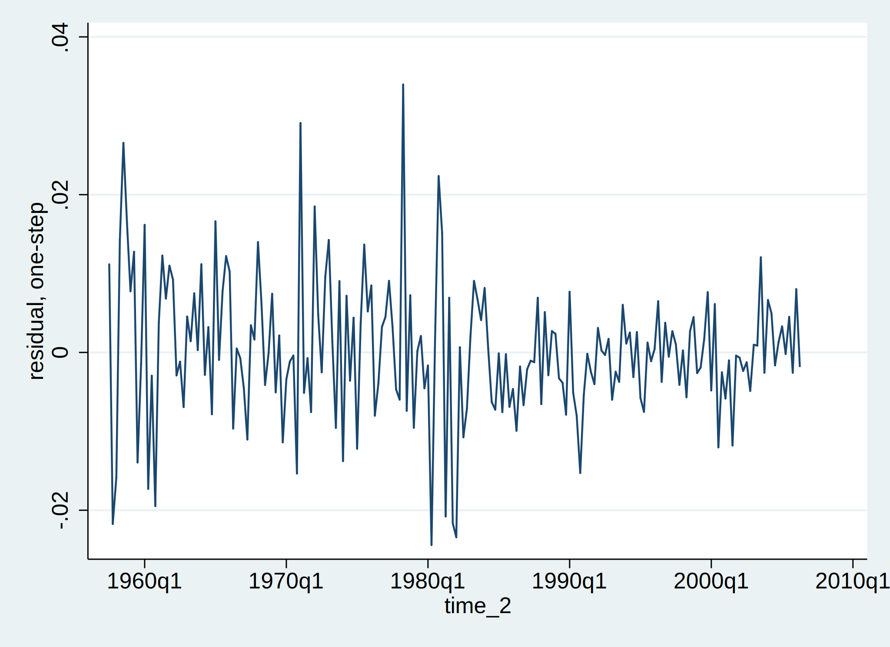
-1 0 1 -1 0 1
LAG AC PAC Q Prob>Q [Autocorrelation] [Partial Autocor]
-------------------------------------------------------------------------------
1 -0.0037 -0.0037 .00273 0.9583 | |
2 0.0475 0.0478 .45496 0.7965 | |
3 -0.0842 -0.0841 1.8802 0.5976 | |
4 0.0267 0.0241 2.0238 0.7314 | |
5 -0.1094 -0.0985 4.4548 0.4859 | |
6 -0.0030 -0.0144 4.4567 0.6151 | |
7 -0.0144 0.0017 4.4996 0.7208 | |
8 -0.1273 -0.1466 7.8428 0.4490 -| -|
9 0.0190 0.0222 7.9177 0.5425 | |
10 0.1200 0.1314 10.923 0.3635 | |-
11 0.1763 0.1666 17.44 0.0955 |- |-
12 -0.0296 -0.0273 17.624 0.1276 | |
13 0.0091 -0.0303 17.642 0.1716 | |
14 0.0155 0.0452 17.693 0.2211 | |
15 -0.0602 -0.0658 18.469 0.2388 | |
16 0.0978 0.1380 20.53 0.1973 | |-
17 -0.0559 -0.0471 21.207 0.2171 | |
18 0.0948 0.1099 23.169 0.1842 | |
19 -0.0457 0.0185 23.626 0.2109 | |
20 0.1292 0.0378 27.306 0.1269 |- |
21 0.0101 0.0442 27.329 0.1602 | |
22 0.0481 -0.0049 27.845 0.1809 | |
23 -0.0802 -0.0230 29.289 0.1709 | |
24 0.0212 0.0307 29.39 0.2058 | | Portmanteau test for white noise
---------------------------------------
Portmanteau (Q) statistic = 29.3898
Prob > chi2(24) = 0.2058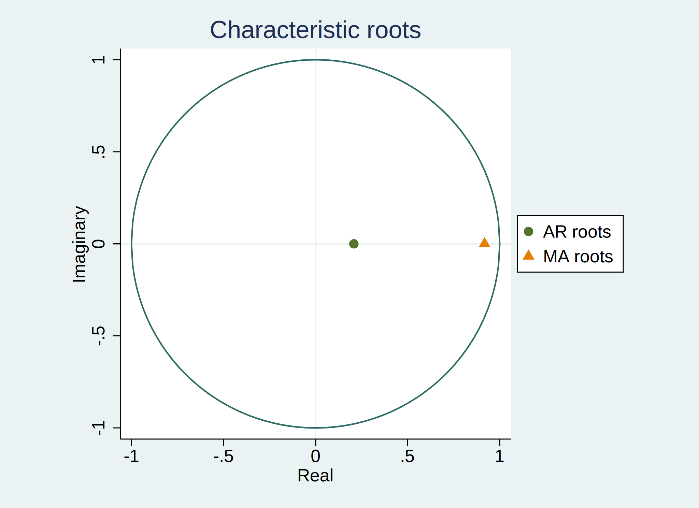